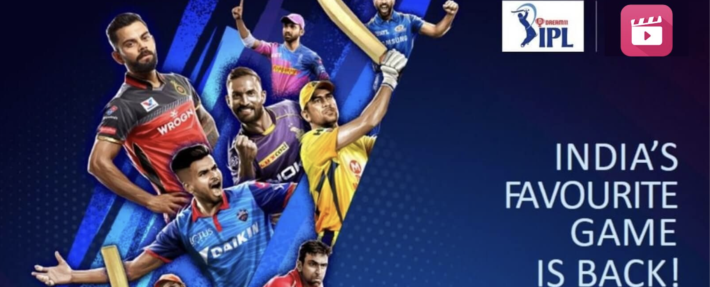
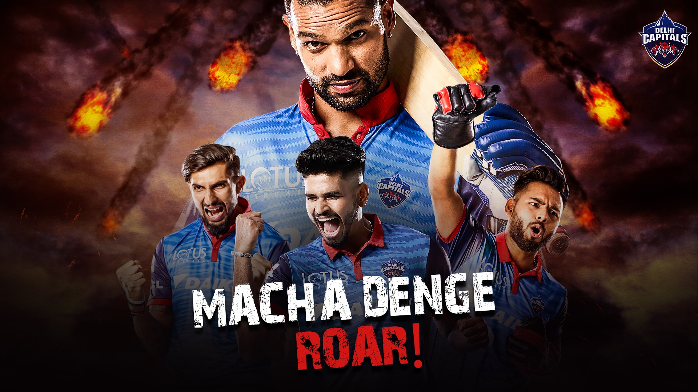
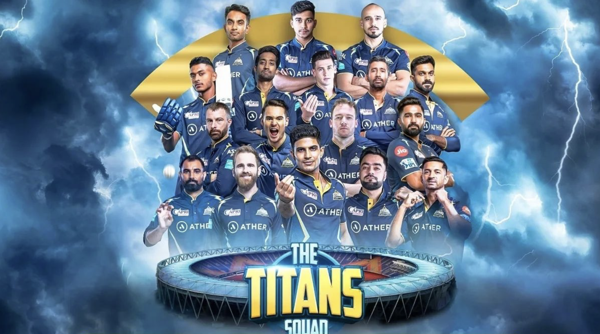
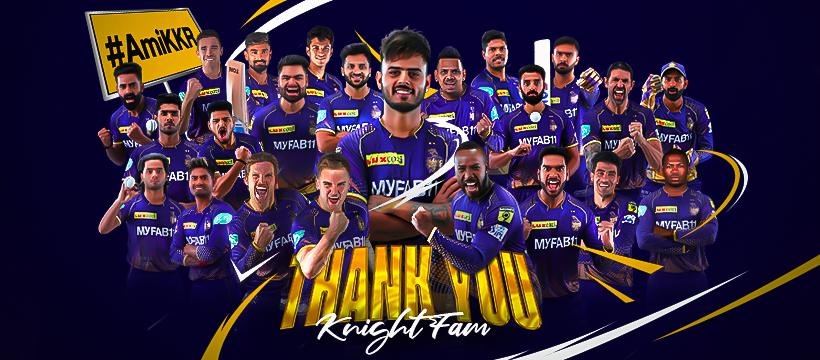
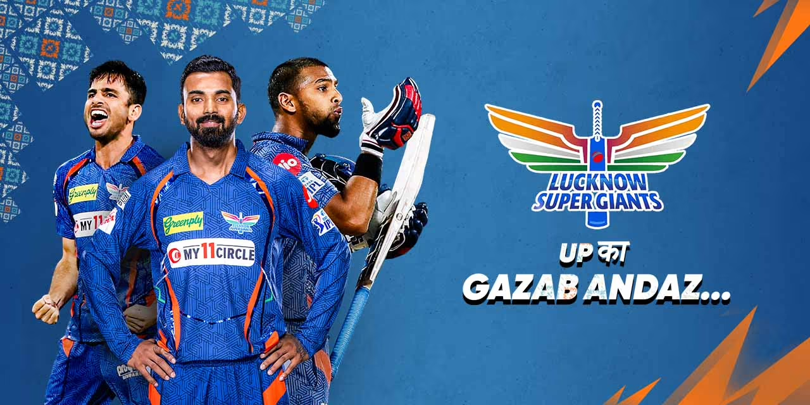
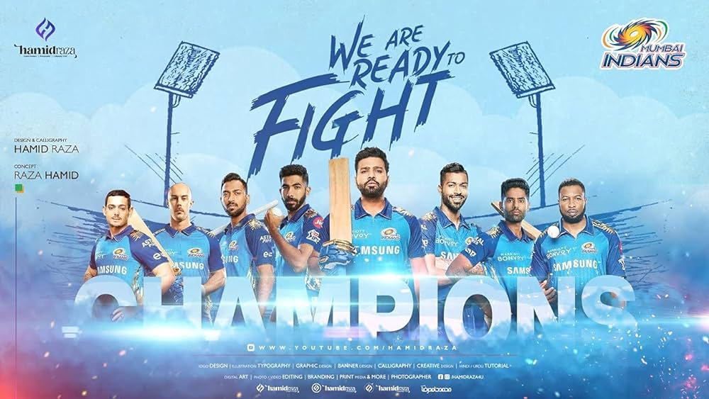
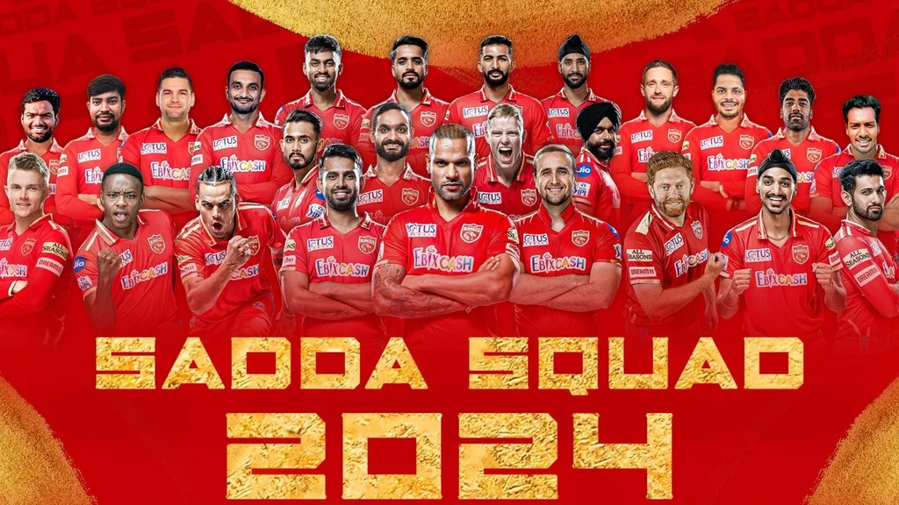
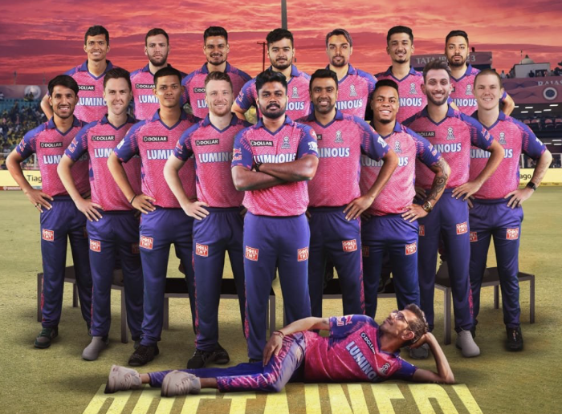
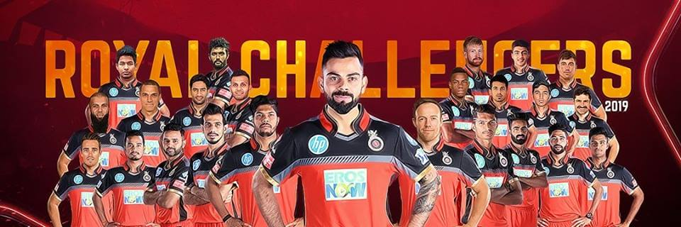
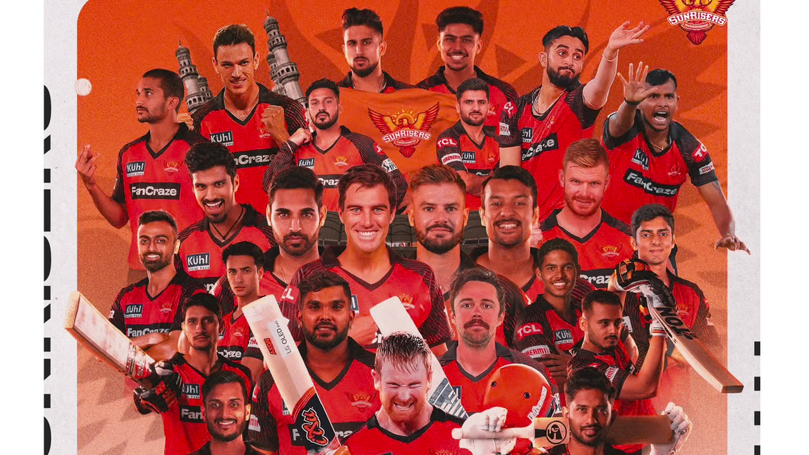

INDIAN PREMIER LEAGUE 2024

Chennai Super Kings
Delhi Capitals

Gujarat Titans

Kolkata Knight Riders

Lucknow Super Giants

Mumbai Indians

Punjab Kings

Rajasthan Royals

Royal Challengers Bengaluru

Sunrisers Hyderabad
